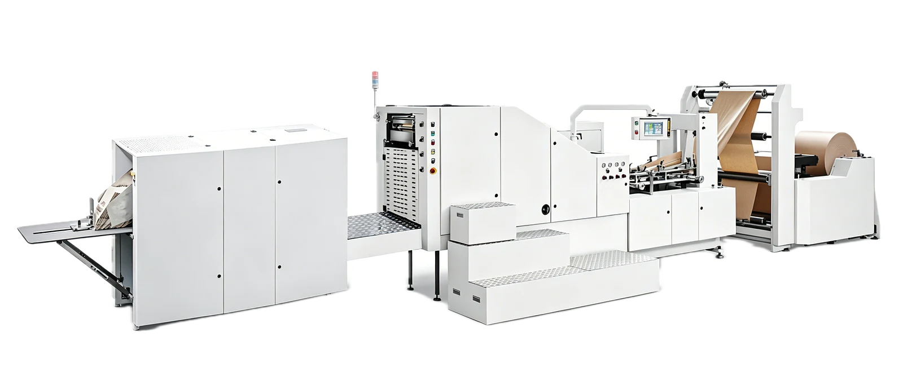
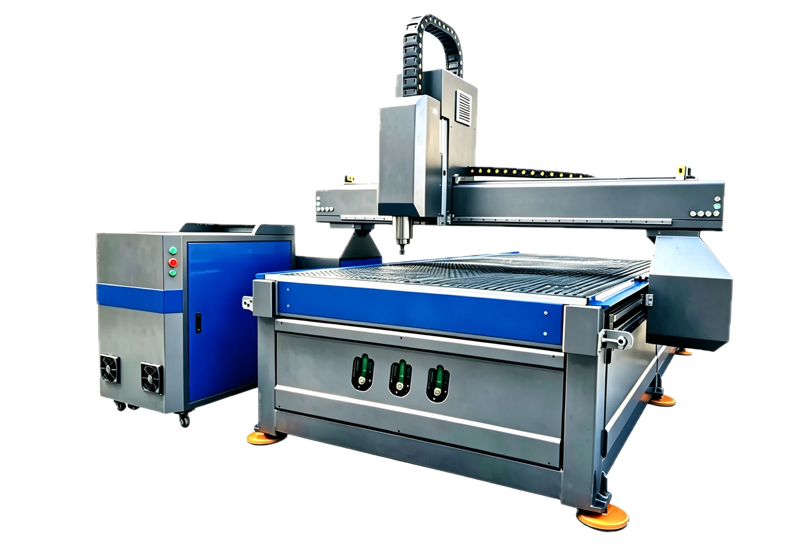

Complementary Machines
Machines that go with a plastic parts shop.

Paper & plastic · bags
Paper Bag Making Machine
Converts paper rolls into glued square bottom bags.

Paper & plastic · cups
Conical Paper Cup Machine
Forms and seals paper cups from printed board.

Sheet metal & laser
Heavy-Duty High-Speed Insulation Board Cutting Machine
Machines the fixtures and jigs the molds run in.